часто бывает полезна следующая теорема, принадлежащая Штольцу.
часто бывает полезна следующая теорема, принадлежащая Штольцу.Для определения пределов неопределенных выражений 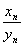 типа часто бывает полезна следующая теорема, принадлежащая Штольцу.
Пусть варианта 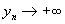, причем – хотя бы начиная с некоторого листа – с возрастанием n и  возрастает: 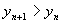. Тогда
возрастает: 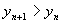. Тогда  =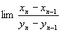,
=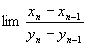,
Если только существует предел справа (конечный или даже бесконечный).
Допустим, что этот предел равен конечному числу 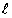:
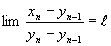.
Тогда по любому заданному 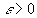 найдется такой номер N, что для n>N будет
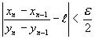
или
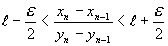.
Значит, какое бы n>N ни взять, все дроби 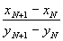,  , …, 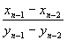,
, …, 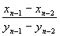,  лежат между этими границами. Так как знаменатели их, ввиду возрастания yn вместе с номером n, положительны, то между теми же границами содержится и дробь 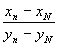, числитель которой есть сумма всех числителей, написанных выше дробей, а знаменатель – сумма всех знаменателей. Итак, при n>N
лежат между этими границами. Так как знаменатели их, ввиду возрастания yn вместе с номером n, положительны, то между теми же границами содержится и дробь 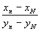, числитель которой есть сумма всех числителей, написанных выше дробей, а знаменатель – сумма всех знаменателей. Итак, при n>N
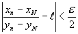.
Напишем теперь тождество:
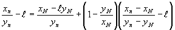,
откуда
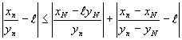.
Второе слагаемое справа при n>N становится <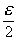; первое же слагаемое, ввиду того, что  , также будет <, скажем, для n>N’. Если при этом взять N’>N, то для n>N’, очевидно, 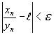, что и доказывает наше утверждение.
, также будет <, скажем, для n>N’. Если при этом взять N’>N, то для n>N’, очевидно, 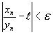, что и доказывает наше утверждение.
 , следовательно, вместе с yn и xn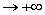, причем варианта xn возрастает с возрастанием номера n. В таком случае, доказанную теорему можно применить к обратному отношению
, следовательно, вместе с yn и xn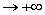, причем варианта xn возрастает с возрастанием номера n. В таком случае, доказанную теорему можно применить к обратному отношению 
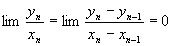
(ибо здесь предел уже конечен), откуда и следует, что 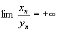, что и требовалось доказать.
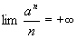
Этот результат с помощью теоремы Штольца получается сразу:
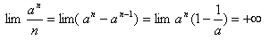
Если варианта anимеет предел (конечный или бесконечный), то этот же предел имеет и варианта
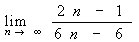
(“среднее арифметическое” первых n значений варианты аn).
Действительно, полагая в теореме Штольца
Xn=a1+a2+…+an, yn=n,
Имеем:

Например, если мы знаем, что 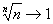,
то и 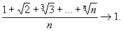
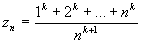,
которая представляет неопределённость вида .
Полагая в теореме Штольца
xn=1k+2k+…+nk, yn=nk+1,
будем иметь
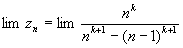.
Но
(n-1)k+1=nk+1-(k+1)nk+… ,
так что
nk+1-(n-1)k+1=(k+1)nk+…
и
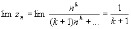.
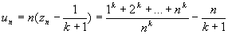 ,
представляющей в первой форме неопределенность вида , а во второй – вида  . Произведя вычитание дробей, получим на этот раз неопределенное выражение вида
. Произведя вычитание дробей, получим на этот раз неопределенное выражение вида  :
:
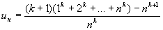.
Полагая xn равным числителю этой дроби, а yn – знаменателю, применим еще раз ту же теорему. Получим
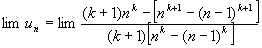.
Но 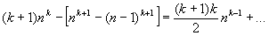,
а 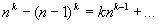,
так что, окончательно,
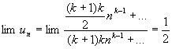.
Пример 1.
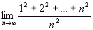= =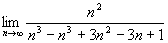=
=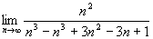= =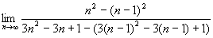=
=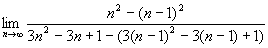= = 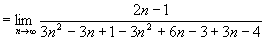=
= 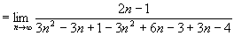= 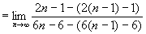=
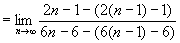= =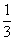.
=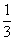.
Пример 2.
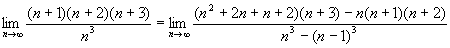=
=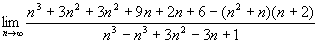=
=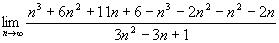=
=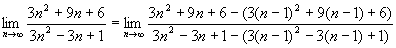=
=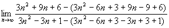=
==
=.
Пример 3.
=
=.
Теорема Штольца справедлива для последовательностей, но т.к. последовательности есть частный случай функций, то эту теорему можно обобщить для функций.
Пусть функция , причем, начиная с некоторой xk, g(xk+1)>g(xk), т.е. функция возрастающая.
Тогда  ,
,
если только существует предел справа конечный или бесконечный.
Доказательство:
Допустим, что этот предел равен конечному числу k
.
Тогда, по определению предела
или
.
Значит, какой бы ни взять, все дроби
,  , …,
, …,
лежат между этими границами. Так как знаменатели их, ввиду возрастания g(xn) вместе с x(n), положительны, то между теми же границами содержится и дробь , числитель которой есть сумма всех числителей, написанных выше дробей, а знаменатель – сумма всех знаменателей. Итак, при 
 .
.
Напишем тождество(которое легко проверить):
,
Откуда
.
Второе слагаемое справа при  становится
становится  ; первое же слагаемое, ввиду того, что , так же будет , скажем, для . Если при этом взять
; первое же слагаемое, ввиду того, что , так же будет , скажем, для . Если при этом взять  , то для , очевидно
, то для , очевидно  , что и доказывает теорему.
, что и доказывает теорему.
Найти следующие пределы:
= ==2
==2
= ==
== =0
=0
 неопределенность
неопределенность  =
= ==
==